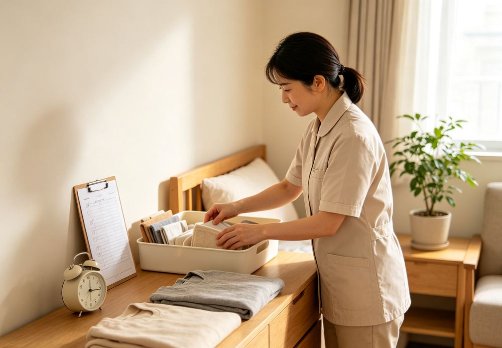
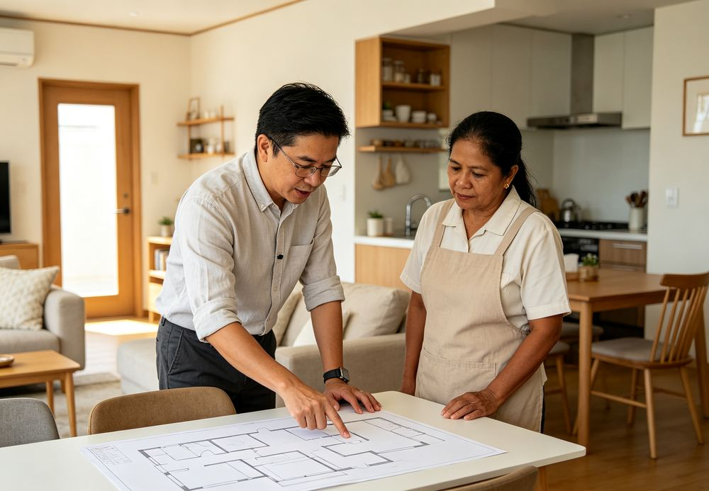
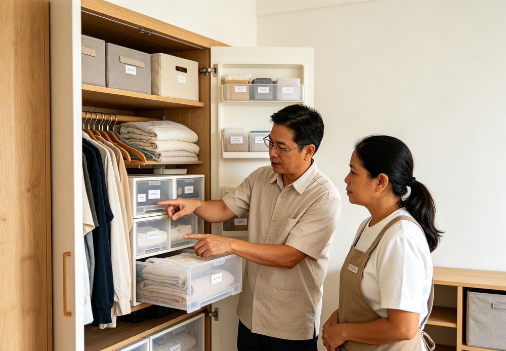

服務項目
我們實際到府教什麼
主要教的是居家收納整理，會依照每個家庭實際的空間和需求，調整教學內容。

收納系統建立
看家裡實際的空間去規劃怎麼分類，重點不是塞得好看，是塞得住、找得到。
衣物摺疊與分類
建立一套看護工學得會、也能每天自己維持下去的摺衣、掛衣標準。

空間動線規劃
重新安排常用物品的位置與動線，讓日常整理更省力、更直覺，不用每次都想。

日常維持習慣養成
重點不是整理一次很漂亮，是教會怎麼一直維持下去——訓練結束後我們還會再追蹤，確認習慣有沒有真的養成。